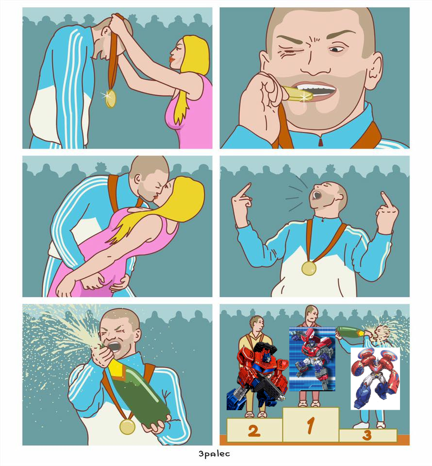

Tastiness of Universal Clusters
By Arren Meuchel
The 16 clusters are as follows:
The Bigguns
- Primax
- Generation 1 and Beast Wars. Most of the multiverse
- Viron
- Robots in Disguise (2001). Notably, Car Robots (2000) is Primax
- Aurex
- Unicron Trilogy
- Tyran
- Bayverse
- Malgus
- Animated
- Uniend
- Aligned, which is both part of the multiverse, and includes multiple universal streams. Despite Hasbro's best efforts.
The Littluns
- Fornax
- Kre-O
- Iocus
- The weird shit. Hero Mashers, Bot Shots, Construct-Bots, Battle Mashers, Attacktix, et cetera. (yeah, I know some Latin)
- Nexus
- Where the Transcendent Technomorphs are from. Not as important as they like to think.
- Quadwal
- The ""Real"" world. Only cluster I've been to. (So far...)
- Yayayarst
- Go-Bots. Playskool, not Tonka.

Artistic representation of the TransTechs' place in the multiverse.
The Not-Actually-Transformers-uns
- Cymond
- Takara robots. Diaclone, Brave, Micro Change, Zoids, and more!.
- Gargent
- GoBots. Tonka, not Playskool.
- Lukas
- Star Wars Transformers. Despite the name, they're just transforming mecha, not Transformers
- Rovio
- Angry Birds Transformers. Despite the name, they're just birds and pigs mutated by the EggSpark, not Transformers
- Xobitor
- Robotix. Hasbro robots. Put the future in your hands.
The List (Ordered form Tastiest to Tasty-least)
- Yayayarst That's a juicy berry if I've ever heard of one.
- Rovio I don't care that it's Finnish for pyre, it sounds like a kind of pasta.
- Iocus Chemically engineered snack food. Not healthy, but literally designed to be tasty.
- Malgus Some kinda freaky stew someone on Tumblr made. Not ideal, but better than you'd expect.
- Quadwal Nice and hearty. Goes great with a glass of room-tempature tap water.
- Aurex Kinda like artichoke. I don't really like artichoke, but on this list, edibility is a surprisingly high bar.
- Tyran Sounds like a nut. I don't really like nuts.
- Uniend Some kinda onion fruit thing. Acceptable, but certainly not something I'd choose.
- Fornax These are seeds. Great source of fiber, not something you eat on it's own.
- Gargent Something leathery or jerky-like. Practical nutrition, but not particularly tasty.
- Primax A protein powder. Disgusting, but nutritious.
- Nexus To consume this would change you. You'd either die in an incomprehensibly horrible manner, or ascend beyond things such as "Tastiness"
- Lukas I generally find cannibalism deplorable. However, if absolutely necessary, George Lucas' corpse would not be the least tasty thing ever.
- Xobitor Some kinda extreme sci-fi drug. I'd stay away.
- Cymond This is straight-up poison.
- Viron That's a fucking prion disease.